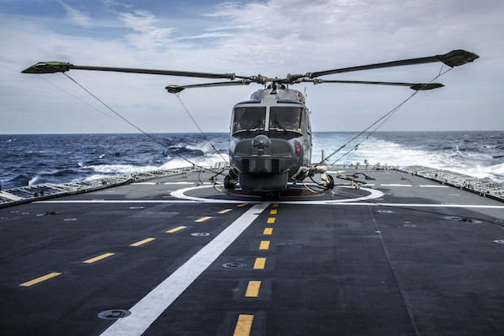

Bits & Pretzels
Pitch vor Gründer:innen, Investor:innen und Innovatoren.
Neben meiner Tätigkeit in Unternehmen durfte ich an Projekten mitwirken, die eher nach IMDb als nach Lebenslauf klingen: Hollywood-Produktionen, Serien, Theater, Pitches und Events.
Ein Jugendtraum wurde Realität: Mitarbeit an zwei Produktionen mit internationalem Anspruch – Operation Walküre und Homeland.
Teilnahme an Dogs of Berlin, Staffel 1 – eine Szene, die heute noch zu meinen liebsten Dreherinnerungen gehört.
Zusammenarbeit mit Peter Stein und Klaus Maria Brandauer an einer ungekürzten Inszenierung von Schillers „Wallenstein“ (Premiere 2007).
Theater als Trainingslager: Präzision, Timing, Klarheit, Präsenz. Eigenschaften, die in Führung und Projektarbeit ebenso zählen.
Pitch vor Gründer:innen, Investor:innen und Innovatoren.
Pitch während der Kieler Woche – Innovation direkt auf dem Wasser.
Ein Format, bei dem Ideen in kürzester Zeit Form annehmen.